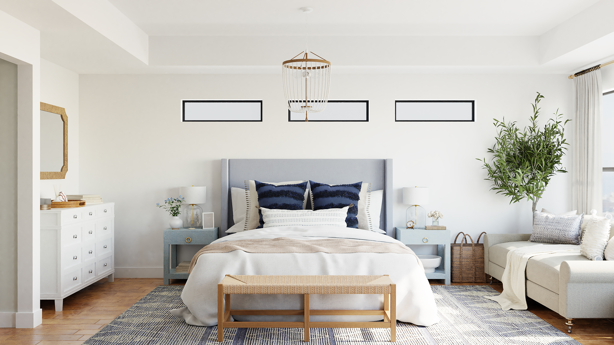
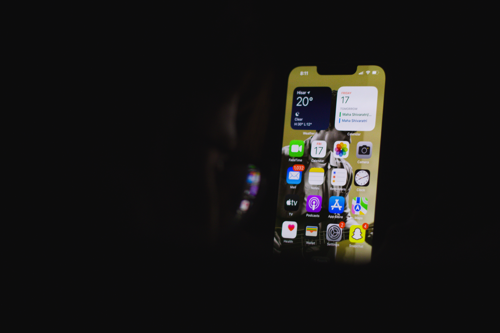

01
수면환경 조성하기

편안한 수면 환경을 조성해야합니다.
조용하고 어두운 방, 편안한 침대와 베개,
적절한 온도 등이 필요합니다.

침실에는 수면을 방해하지 않는 적절한 조명이 필요합니다.
자연광이 부족한 경우 부드러운 조명이나 무드등을 활용해보세요.


스마트폰, 태블릿, 컴퓨터 등 수면 전에는 제한하는 것이 좋습니다.
스크린의 블루 라이트는 수면을 방해할 수 있기 때문입니다. 또한,
침실 안에는 TV나 스마트폰 등의 전자기기를 배치하지 않는 것이 좋습니다.